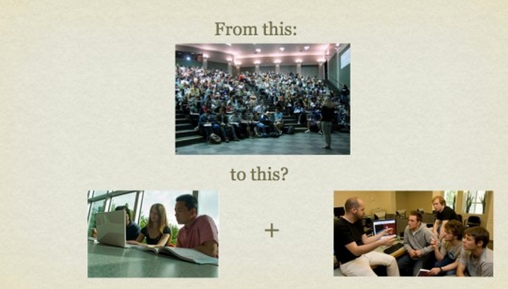

12.3 Passo Um: Definir como pretende ensinar


Imagem: Remistura © de Tony Bates, 2010; fotos originais: Biblioteca da UBC

De todos os nove passos sugeridos, este revela-se o mais relevante e, para a maioria dos formadores, o mais desafiador, dado que pode implicar a transformação de rotinas letivas consolidadas.
12.3.1 Como eu gostaria efetivamente de lecionar esta disciplina?
Esta questão desafia-o a analisar a sua filosofia de ensino de base. Qual é a minha função enquanto docente? Adoto uma postura objetivista, sob a premissa de que o conhecimento é delimitado e de que o meu papel consiste em transmitir essa informação da forma mais eficaz possível aos estudantes? Ou encaro a aprendizagem como um processo de desenvolvimento pessoal no qual a minha função reside em apoiar os estudantes na aquisição de competências de questionamento, análise e aplicação da informação e do conhecimento?
Encaro-me prioritariamente como um facilitador ou orientador da aprendizagem? Eventualmente, o leitor pretenderá lecionar sob este último modelo, contudo depara-se no ensino presencial com turmas de 200 alunos, contingente que impõe o regresso a dinâmicas essencialmente expositivas. Ou, ainda, pretenderá associar as duas abordagens mas depara-se com as restrições de horários e programas curriculares rígidos.
Os Capítulos 2, 3 e 4 sistematizam as opções disponíveis em termos de filosofia de docência.
12.3.2 Quais as fragilidades do meu modelo letivo atual?
Outro ponto de partida reside na reflexão sobre os elementos insatisfatórios nas disciplinas lecionadas atualmente. O volume de conteúdos a abordar apresenta-se excessivo? Seria viável tratar as matérias sob outra metodologia, por exemplo, orientando os estudantes a localizar, analisar e aplicar a informação para a resolução de problemas ou desenvolvimento de investigações? Poderia priorizar o desenvolvimento de competências neste contexto? Em caso afirmativo, de que forma estruturaria atividades práticas para o efeito? Qual a parcela de estudo que os estudantes realizariam de forma autônoma, otimizando a sua gestão de carga horária?
O perfil de estudantes é demasiado heterogêneo, com alguns a sentirem dificuldades enquanto outros demonstram impaciência para avançar? De que forma poderia personalizar o ensino, garantindo o sucesso de alunos com diferentes níveis de proficiência? Seria viável organizar a docência de modo a que os estudantes com maiores dificuldades dedicassem mais tempo às tarefas, ou propor atividades de pendor avançado aos alunos com ritmo de progressão superior?
Ou, eventualmente, as dinâmicas de debate coletivo e o pensamento crítico encontram-se condicionados pela dimensão excessiva da turma. Seria viável recorrer à tecnologia para reconfigurar a turma em pequenos grupos de trabalho, assumindo o professor o papel de acompanhamento das discussões? É possível segmentar o trabalho de modo a que os estudantes realizem o estudo autônomo dos conteúdos teóricos básicos, reservando os tempos presenciais para debates e reflexão crítica conjunta?
Por exemplo, ao disponibilizar parte substancial dos conteúdos no ambiente on-line, o professor liberta tempo letivo para dinâmicas de interação presenciais ou digitais, em plenário ou em pequenos grupos, reduzindo a necessidade de aulas expositivas teóricas para grandes turmas. Determinados docentes redesenharam disciplinas de 200 alunos dividindo-as em 10 grupos de trabalho; o conteúdo expositivo foi disponibilizado on-line e o professor dedicou uma semana a cada grupo em fóruns de debate digital e tarefas colaborativas, promovendo interações mais frequentes com todos os estudantes.
Noutro cenário, sente-se limitado pelas condicionantes de tempo e espaço dos laboratórios ou oficinas letivas, quer pela complexidade de montagem de equipamentos, quer pela escassez de tempo de experimentação direta dos alunos? Seria viável reestruturar a disciplina desafiando os estudantes a realizarem tarefas preparatórias on-line, rentabilizando o tempo de laboratório na manipulação direta? Poderiam os estudantes documentar as suas experiências práticas subsequentes on-line recorrendo a portfólios digitais? É viável localizar recursos educacionais abertos, tais como simulações ou gravações de vídeo, que mitiguem a necessidade de tempos de laboratório físicos? Ou poderia o professor conceber demonstrações em vídeo de qualidade, reservando as interações com os alunos para a análise crítica dos resultados?
Finalmente, depara-se com sobrecarga de trabalho pela necessidade de responder a dúvidas individuais constantes ou classificar um volume excessivo de trabalhos acadêmicos? De que forma poderia reestruturar a disciplina para gerir a sua carga horária de forma mais equilibrada? Os estudantes poderiam colaborar mais em dinâmicas de entreajuda? Em caso afirmativo, de que modo organizaria esses grupos? Seria viável redefinir o pendor das avaliações para modelos de trabalho baseados em projetos ou na construção progressiva de portfólios digitais, facilitando o acompanhamento das atividades e a classificação final?
12.3.3 Utilizar a tecnologia para repensar a docência
A ponderação de novas tecnologias ou de modalidades de ensino alternativas abre a oportunidade para repensar o seu modelo letivo, superando limitações clássicas da sala de aula presencial e atualizando as suas metodologias. Um caminho para apoiar esta reflexão consiste na estruturação de um ambiente de aprendizagem rico para a disciplina (ver Capítulo 6).
A integração tecnológica e a transição parcial ou integral para o ambiente on-line trazem potencialidades que transcendem os limites físicos de horários e salas das disciplinas teóricas semanais clássicas (ver Capítulo 4). Não implica necessariamente realizar todos os processos on-line, mas sim focar o tempo presencial no campus nas tarefas que exigem copresença física. Em alternativa, permite reformular os currículos de modo a potenciar as mais-valias do digital, desafiando os estudantes a localizar, analisar e aplicar dados de forma autônoma.
Deste modo, no planejamento de uma nova disciplina ou no redesenho de um curso cujo funcionamento considere insatisfatório, aproveite a oportunidade para definir de que forma gostaria efetivamente de ensinar e se esse modelo é compatível com um ambiente de aprendizagem alternativo. Não se trata de uma decisão de caráter imediato; à medida que avançar pelos nove passos sugeridos, a opção tornar-se-á mais evidente. O relevante reside na abertura para adotar metodologias letivas diferenciadas.
O Capítulo 4 e os Capítulos 10 e 11 sugerem abordagens alinhadas com estas reflexões.
12.3.4 O que NÃO fazer
Importa reter um aspecto central: caso se limite a disponibilizar as suas notas de aula na internet ou a gravar aulas expositivas de 50 minutos para descarregamento pelos alunos, registará previsivelmente taxas de conclusão mais baixas e piores classificações do que no modelo presencial convencional. Salienta-se este ponto dado que é frequente a tendência de transpor as rotinas da sala de aula física para o on-line (ex.: recurso a sistemas de gravação de aulas presenciais para consumo doméstico pelos estudantes ou transmissão de aulas teóricas síncronas por videoconferência). Estudos demonstram que esta transição mecânica não produz resultados satisfatórios (ver, por exemplo, Figlio, Rush e Yin, 2010).
A fragilidade de transpor a aula expositiva presencial diretamente para o on-line reside no desrespeito por um requisito central dos estudantes digitais: a flexibilidade. O perfil de necessidades do aluno on-line difere do presencial. Horários de atendimento de pendor rígido não asseguram a flexibilidade de contato requerida. No ambiente digital, os estudantes realizam sessões de estudo de menor duração, intervaladas e que raramente superam uma hora contínua de trabalho. As atividades on-line devem, por isso, ser estruturadas em módulos curtos de estudo. Transmissões síncronas extensas podem coincidir com horários de trabalho dos alunos. Sobretudo, o on-line viabiliza a partilha de conteúdos por metodologias mais eficazes do que a aula expositiva de uma hora.
Deste modo, torna-se necessário desenhar as práticas de ensino adequando-as às especificidades da modalidade que os estudantes utilizarão. A investigação científica e a experiência acumulada identificaram os princípios de design instrucional recomendados para o ensino presencial e digital. É sobre esta dimensão que incidem os oito passos seguintes.
12.3.5 Uma oportunidade para inovar
A tecnologia e as modalidades híbridas de ensino abrem oportunidades para redefinir as práticas pedagógicas. Docentes detentores de sólidos conhecimentos científicos dispõem de ferramentas para expandir as suas metodologias e integrar os seus projetos de pesquisa na docência. As restrições contemporâneas residem menos no tempo ou nos orçamentos e mais na capacidade de inovação e imaginação. Os docentes que a demonstrarem serão capazes de desbravar caminhos inéditos e criativos no ensino das suas áreas do conhecimento.
Referência
Figlio, D., Rush, N. and Yin, L. (2010) Is it Live or is it Internet? Experimental Estimates of the Effects of Online Instruction on Student Learning Cambridge MA: National Bureau of Economic Research
Atividade 12.3 Repensando o seu ensino
- Seria capaz de redigir a sua filosofia de docência — descrevendo de que forma gostaria efetivamente de ensinar a sua matéria caso estivesse livre de condicionantes institucionais?
- Quais as principais limitações e desafios que enfrenta atualmente nas suas aulas presenciais?
- Reflita se, ao transitar uma disciplina para o ambiente on-line (com a flexibilidade de acesso e os recursos da internet associados), poderia ensinar sob metodologias mais alinhadas com a sua filosofia de base. De que forma se estruturaria a sua docência neste novo cenário?
Esta atividade destina-se a fins de reflexão individual, não contando com feedback associado.